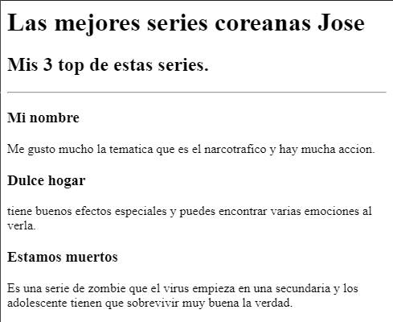
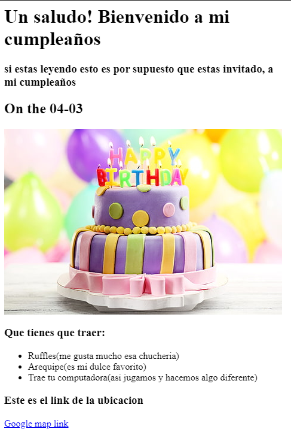

Joseangel pagina Web
estoy tratando de hacer lo mejor posible
En esta pagina estoy aplicando puro HTML
Estas son algunas cosas que estoy aplicando:
- Enlances de paginas
- Imagenes
- entre otras cosas
Mi top de series

Les recomiendo full ver esas series
Tarjeta de invitacion cumpleaños

Sobre mi
Mi contacto